|
MachV/Mozilla: Mail |
UI Specification
|
|
Main Mail Spec |
Last
Modification:
|
|
Author: Jennifer Glick |
Status: Mostly Complete |
||||||||||
|
Quicklinks: Design Overview |
Feature Team
Please post all comments and suggestions regarding this spec to the newsgroup, netscape.public.mozilla.mail-news. |
This spec covers the basic design of Three Pane Mail.
Mozilla users tend to be experienced internet users who are often software engineers or involved in the software industry. Engineers developing applications using the Mozilla code, may be creating applications for a variety of levels of users.
Historically, Netscape users have tended to typically be
more intermediate users who are familiar with mail and the internet.
This was especially true since users had to consciously choose to
download and install the Netscape applications. Users tend to use the
Netscape applications during the day time while at work and at home
for work/personal reasons. While Netscape continues to focus on
the more intermediate class of user, a goal is to also be usable and
appealing to less experienced users, such as former AOL users who
would like to expand their internet experiences.
Fundamental Tasks
Intermediate Tasks
Advanced Tasks
- Read mail messages
- Distinguish between new and old mail
- Compose and Send a message
- Reply to Sender
- Reply to All
- Forward a message
- Delete a message
- Print a message
- Find a message in their inbox
- Find a send message
- Attach a file
- Save/Read an Attachment
- Create a folder
- Rename/Delete a folder
- Empty Trash
- Save a message as a Draft and find it again later
- Save a message as a template and find it again later
- Save a message as a File
- Move/Copy a message
- Add sender to Address Book
- Sort mail using columns
- Modify order and size of columns
- Address messages using To, Cc and Bcc, etc.
- Use the Address Book to select recipients
- Use BASIC Rich Text (html) editing features (bold, underline, text color, indent, etc.)
- Change Mail preferences
- Create/Use vCard
- Create/Use Signature File
- Use intermediate html editing features (insert image, insert link, etc.)
- Subscribe to newsgroups
- Post to newsgroups
- Renaming a Mail/News account
- Reordering accounts
- Advanced html editing features.
|
|
|
|
|
|
|
Application Specific Area |
|
|
|
|
|
(SideBar) |
|
|
|
|
Tabbing order in Mail/Newsgroups (same as the Address Book) is clockwise. Shift+Tab is counter clockwise. Ctrl+Tab jumps to the next major area, skipping the individual items within the area.
If the Sidebar is closed then the tab order is Folder pane, Quick
Search text field, Clear button, Advanced button, Thread pane,
Message pane, then back to the Folder pane.
If the Sidebar is open then the tab order is Folder pane, Quick
Search text field, Clear button, Advanced button, Thread pane,
Message pane, Sidebar, then back to the Folder pane.
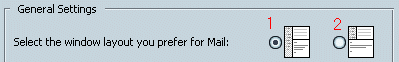
Using the Mail & Newsgroups Preference panel, users can choose the layout of the window. As a default, layout 1 is selected and the Sidebar is open. In layout 2, the Sidebar is an additional column on the left of the window. The sidebar is closed by default in layout 2.
Please see the Quick Search feature spec.
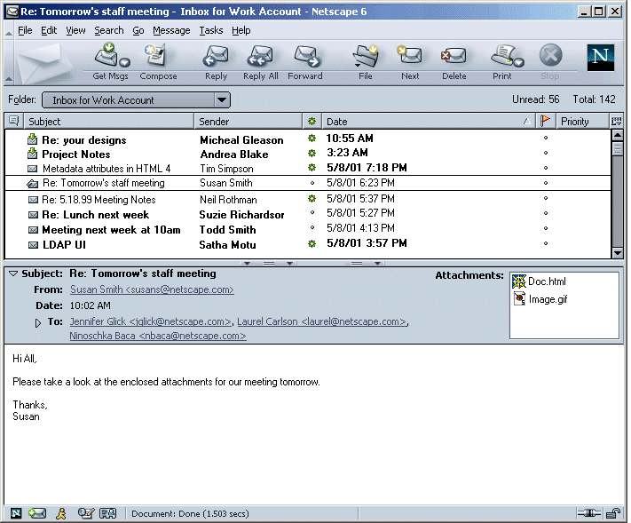
The Location Toolbar provides a method of selecting a folder/account/news server/newsgroup when the sidebar/folder pane is closed or collapsed. It displays the name of the folder/newsgroup that is currently selected in a drop down list. On the far right of the Location Toolbar, the number of total messages and unread messages (Unread: X Total: Y) is displayed (and Not shown in the status bar). If the user closes the Location Toolbar, the number of total messages and unread messages is displayed in the status bar.
The Location Toolbar is turned off by default, but if the user changes this preference, it is remembered. The user can show/hide the Location Toolbar using the View menu. The Location Toolbar is not available in the Standalone Message Window.
There should be two different preferences values for the Location
Toolbar: one for the 2 pane mode and one for the 3 pane mode. If the
user selects to hide the Location Toolbar from the View menu in 2
pane mode, then it will always be hidden when in 2 pane mode, until
s/he selects to show it again. Independently the user can choose
whether or not it is visible in 3 pane mode, by showing it or hiding
it while in 3 pane mode. Note: this was in the spec for 4.x but not
implemented.
Search and Location widgets are merged. Unread and Total is displayed in the statusbar.
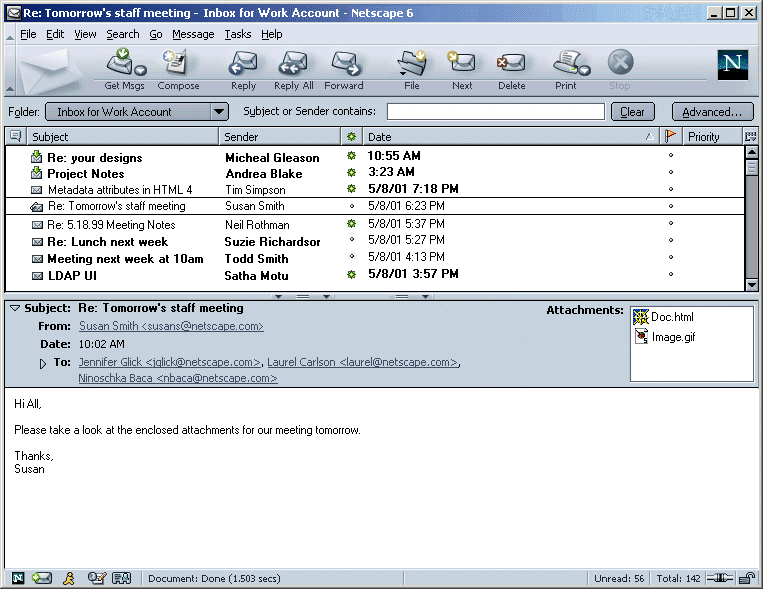
The Message Center Window does not currently exist in the product.
For 3 Pane Mail (Thread, Folder and Message Panes), 2 Pane Mail (Folder and Thread Panes OR Thread and Message Panes) and the Standalone Message Window (double click on a message to open it in it's own window), the name displayed in the Titlebar is:
If a particular message has not yet been selected, or the "Message" pane is closed, the <Subject> would be omitted from the examples above where appropriate.
All top level windows use the same format, "<Title> -
<Product>".
The toolbar is divided into sections based on functionality.
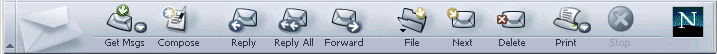
|
Button |
Action |
Dropdown Menu |
|
Get Msgs |
Retrieve messages for the selected Mail account or newsgroup only. Focus remains on the selected account. If user selects an account for which they are not currently logged onto, and clicks "Get Msgs", they are prompted with a password dialog. If a Newsgroup is selected, the "Get Msgs" button retrieves new messages for the selected newsgroup only. If a Newsgroup is selected and a Mail account is selected from the "Get Msgs" dropdown, messages are retrieved for both the newsgroup and the mail account. Focus remains on the newsgroup. If a News Server is selected, the "Get Msgs" button updates message counts. If "Local Folders" (or one if the folders themselves) or an Imported Account or Nothing is selected, the "Get Msgs" button will retrieve messages for the default mail account. For more details and examples, see the Spec for this topic. |
Clicking the "Get Msgs" dropdown menu displays a dropdown
menu with the following items: The "Get Msgs" dropdown menu only shows Mail accounts, not News accounts. (You don't get messages from a news account, you get them from a newsgroup. Showing all the newsgroups a user is subscribed to in the menu would make it very long.). |
|
Compose |
Opens the Compose window. Always available. |
|
|
Reply |
Opens the Compose window to reply to the author of the selected message. News only. The default reply behavior is "to Newsgroup". |
Newsgroups only. Dropdown list: "to Sender Only" and "to Newsgroup". |
|
Reply All |
Opens the compose window to reply to the author plus all recipients of the selected message. News only. The default reply behavior is "to Sender and Newsgroup". |
Newgroups only. Dropdown list: "to Sender and all Recipients" and "to Sender and Newsgroup". |
|
Forward |
Forward a selected message. By clicking the Forward button, the default forward behavior should be invoked (default is set in Preferences). |
Drop down list: "As Attachment", "Inline". |
|
File |
File message(s). Drop down menu of available folders is opened. |
File message(s). Drop down menu of available folders is opened. |
|
Next |
Jumps to next unread message. |
Dropdown list: "Message", "Unread Message", "Flagged Message", "Unread Thread", "Folder", "Unread Folder". (not currently implemented) |
|
|
Prints the selected message(s). Multiple messages can be printed at the same time by selecting multiple messages and then selecting "Print". |
Netscape Only. Dropdown list: "Print", "Print Plus". |
|
Delete |
Deletes the selected message(s). Changes to the "Mark" icon when a newsgroup is selected. |
|
|
Stop |
Used to stop a message from loading if it is taking to long. Only available while a message is being retrieved from the server. |
|
If a Mail Account is selected, all buttons should be disabled except: Get Msgs, Compose, Delete, and Stop (only if activity is currently occurring).
If a News Account is selected, all buttons should be disabled except: Get Msgs, Compose (Opens a New Message not addressed to any newsgroup or person), and Stop (only if activity is currently occurring.).
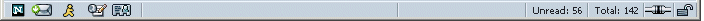
The Statusbar contains the Launcher Icons, status text, progress, online/offline state and security info (SSL).
The Launcher Icons (far left) are used to launch the available applications: Browser, Mail, IM (Netscape only), Editor and Address Book. If the application is already running and its launcher icon is selected, the running instance of that application gets focus.
The Mail Launcher Icon changes (BIF icon -
green arrow appears on icon) when the user is logged onto any of
their Mail accounts and Any of the Mail Accounts has new messages.
Once the user accesses the new messages, the icon returns to its
normal state. Note: There are only Two states for the Mail
Launcher icon, "normal" and "new mail" (no "unknown state").
When the user hovers over the Mail Launcher Icon a ToolTip
appears:
When a folder is selected, the total number of messages and unread messages for that folder is displayed in the Statusbar in the following format; (Unread: X Total: Y). In addition, when the user mouses over a particular folder in the Folder Pane a ToolTip ("X read/Y total) is displayed.
Note: currently in 4.x, the user must select a folder ("Document: Done" displayed), then select the folder again or select a message in the thread pane in order for the message totals to be displayed in the Statusbar. The user should only have to select a folder to see these totals.
Biff is a visual (green arrow on mail icons) and sound indication (pref) that new mail is available. Biff goes off whenever there is new mail on a server or when new mail has been downloaded. It will go away when an action has been taken in any account such as Get Msgs, loading a message, or switching a folder. Even if the headers weren't downloaded and there is still mail on the server, it will not come back until newer messages are available.
There is a preference for each account to "Check for new mail at startup". As the default, this preference is turned on for the first account created or migrated (the default account) and turned off for subsequent accounts. When Mail starts, it will attempt to check for new mail for each account for which the "Check for new mail at startup" preference is turned on. A password dialog for authentication is displayed for each account as necessary (unless password has been saved). If authentication is successful then messages will be retrieved either:
In addition, the folder(s), and parent folders, containing new messages will also change to the biff version (folder with green arrow). Any folder could potentially have the biff indicator (green arrow) EXCEPT the Trash folder.
A ToolTip for the account should say:
 The
default width of the Left Pane in Mail should be at least 190 pixels
wide, including sash and scrollbar. The left pane within the Mail
application contains two components: an application specific area,
"Folder Pane" (Mail Accounts and Folders and News accounts and
Newsgroups) and the "Sidebar" ("My Sidebar for Netscape) area.
The
default width of the Left Pane in Mail should be at least 190 pixels
wide, including sash and scrollbar. The left pane within the Mail
application contains two components: an application specific area,
"Folder Pane" (Mail Accounts and Folders and News accounts and
Newsgroups) and the "Sidebar" ("My Sidebar for Netscape) area.
The "Mail Folders" area displays the user's mail/news accounts and associated folders and/or newsgroups. This area is constant. As a default, this area occupies approximately 2/3 of the Left Pane area.
The "Sidebar" area contains "Tabs" which are each separate components that perform a specific function or serve a certain purpose. The "Sidebar" area is customizable by the user. Users can add/remove Tabs as desired.
Within the "Sidebar" area, one tab is open at a time. The other visible tabs are collapsed and get stacked on top or bottom of the currently open tab. Clicking on one of the collapsed tab headers will expand that tab and collapse the previously expanded tab.
For Netscape Mail, the default panels in the "My Panels" area are: Buddy List (closed), Address Book (closed)" and News (open). For Mozilla Mail, the default panels are: Address Book (closed) and News (open).
Please see the General UE specs page for more details on the Sidebar.
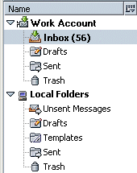A user's mail and news accounts and associated folders are displayed in the Folder Pane. Read and unread messages are displayed as a ToolTip (for a selected account or folder) and unread messages are displayed in parentheses (after an account or folder name).
Using the column selector widget, additional "Unread" and "Total" columns can be added. They are not shown by default.
Each account (IMAP, POP, NNTP) is listed in the folder panel as a top level item, with a hierarchy of associated folders, beginning with the Account Name. The account name is what the user specified in the "Account Name" field during the Account Setup Wizard. (Or what the account name was previously when it was brought over during migration.) If the user did not modify this field, the default is: For Mail - "<user's email address>". For News - "<host name>".
Multiple accounts can be set up. There is always one default account, which is the account the user upgraded from, migrated from, first set up, or defined as the default in Account Setting Preferences. Accounts are displayed in the order in which they were added. "Local Folders" follows the Mail Accounts. News Accounts follow Local Folders. New mail accounts are added below existing Mail accounts and above the Local Folders hierarchy.
Accounts can be deleted, but the user must confirm the deletion: "Are you sure you want to delete the account <account-name>?" With the choices: "Yes" & "No".
If a user is not logged into an account (Mail or Newsgroup) the account level icon will be dimmed/disabled as a visual indicator (not currently implemented).
If a user sends mail (using the "From" dropdown menu in the Compose window) from an account they are not currently logged into and they have the "Save a copy of sent messages in my Sent folder on the server" preference set, when they click the "Send" button, a dialog will appear informing them that they are not logged into the account and so a copy of the message will be saved locally instead of on the server. See the Mail Compose spec for more details.
As a default, the Trash folder model is used for IMAP accounts. Users can change the trash model in the Mail/News Account Settings dialogs.
Under each Account Name, the folders associated with that account are displayed. If a folder contains unread messages, its name is bolded and the number of unread messages is shown in parentheses to the right of the folder name. If there are no unread messages in a particular folder, the parentheses are not displayed. Names of folders will truncate in the middle if they are too long to be completely displayed in the Mail Folder Panel.
Users can create additional folders as desired and as allowed by the specified server. Any new folders added by the user are displayed alphabetically below the default folders.
When the user mouses over (folder does not have to be selected) a particular folder within the Mail Pane a ToolTip ("X Unread/Y Total") is displayed, indicating the number of unread and total messages for the appropriate folder.
The Inbox icon for the appropriate account should change when there is new mail for the account (inbox with green arrow icon). Biff only works if the user is currently log into the account.
When a new account is created, associated account specific default folders are also created. Each account (POP and IMAP) has its own hierarchy of folders. Default folders include:
As Needed Folders - account specific folders which are created as needed:
A "Local Folders" structure (one only) is always created (even when the user is using POP or NNTP only). The Local Folders are independent of the individual accounts. Items common to all accounts can be stored in the Local Folders structure.
Default Folders for Local Folders are: Templates (pre-formatting mail messages for users), Trash and Unsent Messages.
Local Folders created as needed include: User Created Folders
A set of default templates (pre-formatted messages) will be
included for users. They will be located a folder called "Templates"
in the "Local Folders" structure.
As a default, templates created by the user themselves, will be saved
to the "Templates" folder associated with the
individual account from which it was created. User can change
this in Mail/News Account Settings.
Within Mail/News Account Settings, users can specify to which folder they want Sent Mail, Drafts and Templates saved.
IMAP/POP
NNTP
If the user later adds a default mail account (when there was only a news account before) or changes the default mail account from one account to another, the preference for existing accounts is NOT changed but remains as originally set. For example, user creates a news account only. "Sent" mail would default to a "Sent" folder within the "Local Folders" structure. User then sets up a mail account. Sent news still goes to the "Sent" folder within the "Local Folders" structure (but user can change this in preferences).
The following describes how account hierarchies and Local Folders should be displayed for POP and IMAP accounts. This applies for accounts either migrated from a previous Netscape Mail or other Mail application or accounts created as new. If the user has:
g. Examples
|
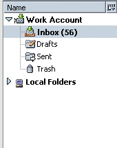 |
Default Out-Of-Box View The user creates a new Mail account during the account setup process. Mail setup process. If a user has set up multiple accounts, as a default, the out-of-box experience should be that the account set as the default is expanded and all other accounts, and Local Folders, are collapsed. Once the user has modified which folders/accounts are expanded and collapsed, the program should remember their settings. |
|
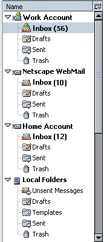 |
Additional Accounts The user adds additional Mail and/or News accounts. |
When a user launches Mail, the application will try and authenticate to accounts for which the "Check for new mail at startup" preference is enabled. See Get Msgs and Check for New Mail at Startup spec the for more details.
Each account has an Inbox where new messages are delivered. Selecting the Inbox displays the messages for that account in the thread pane.
Drag and drop from one account folder to another account folder is available as long as the user is currently logged into both accounts. If the user tries to drop a message onto an account folder for which the user is not logged into the associated account, the cursor changes to the "No Drop" graphic (circle with the line across it).
If the user moves a message from one account to another and then
Replies or Forwards that message, the identity used is that of the
account the message was moved to (as a default, but the user can
change this using the drop down "From" menu).
Each account has its own set of folders. Folders in a POP hierarchy are stored locally (or on the server if available); folders in an IMAP or WebMail hierarchy are stored online, but may be cached locally.
Folders are displayed alphabetically below their parent server (or Local Folders). Special folders, "Inbox", "Drafts", "Sent" and "Trash" are always displayed directly under their parent server.
Folder creation and naming is done using the "New Folder" dialog:
The "New Folder" dialog lets the user choose the parent of the new folder. The default parent is either the current folder selection in the Mail Folder Panel (if applicable) or the default account.
Once the new folder has been created, the parent folder or server remains highlighted. The parent folder is open and shows the new child folder.
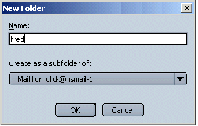
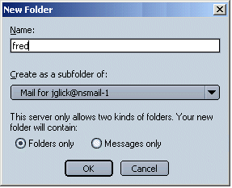
Folders can be renamed directly inline in the Folder Pane or in the Folder Properties dialog.
Special folders and default Local Folders can not be renamed. These include: Special Folders (Inbox, Sent, Trash, Drafts) and default Local Folders (Unsent Messages, Templates, Trash).
To rename a folder inline within the Folder Pane, the user selects the desired folder and uses the context menu to select "Rename". The folder name should now appear with a box around it and the folder name highlighted. The user can now type the name of the new folder. Clicking outside the folder boxed area cancels the action. Once the user has renamed the folder, he/she must click outside the folder boxed area for the new name to take effect. When the user clicks outside the folder boxed area the renamed folder is correctly placed in its new alphabetical location in the folder hierarchy and focus remains on the folder.
Folders can also be renamed using the Folder Properties Dialog. This dialog is opened by either selecting "Properties" in the Folder Pane context menu, or by selecting "Folder Properties" from the "Edit" drop down menu.

Each folder has an associated Properties Dialog.
In general, Folders behave like folders and can be moved, deleted, and copied. Dragging a folder across account boundaries is considered a copy. Dragging within an account is considered a move. Folders within an account can be deleted by dragging them to their account's Trash folder or by pressing Del/Backspace. (Dragging a folder to another account's trash folder creates a copy in the Trash.)
Any folder created by the user can be deleted.
Special Folders: The user can not delete an Inbox. If the user is using POP or the IMAP "move to Trash" model, the Trash folder can not be deleted. If the user switches from the IMAP "move to Trash" model to either the IMAP "delete" model or "move to trash immediately" model, the Trash folder is moved out of the special folders area and grouped with the user created folders in alphabetical order. The user can now delete the Trash folder if they desire. As a default, the Trash folder model will be used for IMAP accounts.
Other Special Folders (Sent, Drafts, Templates) behave differently based on the user's Copies & Folders Preference settings. If the user has their Preferences set so that Sent, Draft and Templates messages are saved to a default folder, the folder that is the default can not be deleted. If the user changes the default folder, the previous default folder can now be deleted.
Local Folders (Unsent Messages, Templates, Trash) should also follow the guidelines mentioned above.
When attempting to delete a folder, the user gets a confirmation dialog, "Are you sure you want to delete folder <name> and all it's contents?".
Deleting a folder can be performed by:
The Thread Pane displays the messages contained within a selected folder.
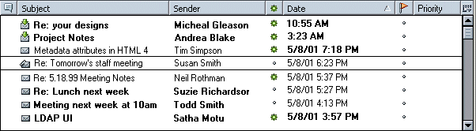
Date and Time are displayed consistently in the Thread Pane as: Month/Date/Year SPACE Time. 00/00/00 00:00 PM. Mail from the day only displays only the time (not the date).
Column headers are customizable (columns displayed, size, order). A user's settings for column headers are global for Mail and News separately. Meaning, the user can have a setting for column headers for all Mail accounts and another one for all News accounts.
Per folder settings include sorting order, threading/no threading and views.
If a certain account (for example WebMail) does not support the type of data displayed in a particular column header, the column will still be displayed, but will be grayed.
Default columns and order are as follows:
|
Thread |
Subject |
Sender/Recipient |
Date |
Column Widget |
All available columns and their functionality are as follows:
|
Column Header |
Description |
Visible by Default |
|
Thread |
Threaded messages. |
Yes |
|
Subject |
Subject of the message. |
Yes |
|
Presence (Netscape) |
A graphic indicator denoting the online presence of the Sender (recipient if the user is the Sender). Netscape Only. |
No |
|
Sender/Recipient |
Same as 4.5. "Recipient" should be displayed when "Sent" or "Drafts" folders are selected. |
Yes |
|
Date |
Date the message was received into the specific folder. |
Yes |
|
Priority |
Message priority. |
No |
|
Flag |
Flag a message. |
No |
|
Size |
Length of message, including attachments (like 4.5) |
No |
|
Status |
The message status. |
No |
|
Unread |
A method to sort by Unread messages. |
No |
|
Total |
When viewing messages by thread, it's the number of messages in the thread. |
No |
|
Column Setup Widget |
Control for exposing/hiding available columns . Resizing and reordering columns will remain the same (drag and drop). |
Yes |
Clicking on a column causes the messages to be sorted by that column. Additional clicks cause the sorting to toggle between the available sorting states for that column (generally ascending and descending).
Mousing over a column causes a ToolTip to appear which explains
the functionality of the column. "Click on this column to sort by
<column name>.
Users can modify column size, order and sorting content. This is a cross product feature (Bookmarks, Address Book, Mail, etc.) and the details should be worked out globally.
Clicking on the "Column Selector Widget" to the right of the columns in a list view drops down a menu with the columns available listed. The ones displayed in the current view have checks next to them. Selecting an item from that drop down menu will toggle its column's display. Users can reorder, size and sort column headings as follows:
Users can remove all columns from the Thread Pane but one. There must be at least ONE column being displayed at all times.
When users add or remove column headers, certain columns should expand/contract while others should remember the size the user set them to. Columns with icons should not expand by themselves. Subject and Sender can expand/contract as much necessary.
When/if columns are moved very close to each other so that not all
the data can be seen, the cut off data is appended with a "..." and
there is always a gutter space of at least 10 pixels separating the
columns of data. If data is not complete for a particular item,
holding the mouse over the item should display the complete data
within a ToolTip.
Because of time limitations, when messages are threaded, no "Show unread messages only" option is available.
When messages are in threaded mode, expandable Twisties are
available at the parent level only.
e. Proxy Icons
The proxy envelope icon (dragable icon in front of Subject) is used to indicate different states of mail messages.
f. Views and Selections with No Messages in the Thread Pane
If a user selects a view ("View" menu, "Messages") in which there are no available messages (For example, "Threads with Unread"), we should provide information to the user instead of just showing an empty thread pane. Let users know what they did to suddenly make the thread view become empty.
Likewise, if the user selects an account or folder in the Mail Folders Panel and there is no data available to be displayed in the Thread Pane, we should provide the user with information that will help them understand why they are seeing what they are seeing and what to do to correct this.
|
If the user selects: |
Thread Pane should display: |
|
An Account |
Account Central - static account information with links to common mail tasks. Becomes 2 pane mail instead of 3 pane mail. |
|
Folder with no messages in it |
"This folder does not contain any messages. Please select another folder." |
|
Folder unable to contain other messages (only other folders) (IMAP only) |
"This folder can only contain other folders and contains no messages. Please select another folder." |
|
If a user selects a view ("View" menu, "Messages") in which there are no available messages |
"There are no messages available for the selected view. From the View menu, choose Messages to select another view." |
|
|
|
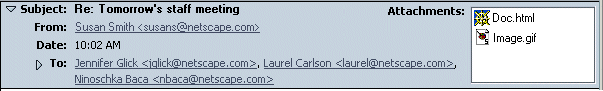
A non-spoofable message Envelope is displayed above the Message Pane. It contains: Subject, From, Date, To, Cc, Group, Reply-To and Followup-To (as appropriate) and an "Attachments" list box (if appropriate). ( If you receive a message as "Bcc", Bcc does NOT show up in the envelope area.) Each item (To, Cc, Group, Reply-To, Followup-To), if present, starts its own new line. The envelope area should scroll with the message body.
The envelope area can be collapsed/expanded by clicking on the arrow to the left of the Subject. The above example contains "Normal" headers. Users can also choose to view Brief or All headers. If more than three recipients in the "To", "Cc", etc. area are included, an additional expand/collapse arrow is provided to the left of the "To", "Cc" etc. item.
If a full address cannot be displayed completely on a given line, the complete address is moved to the next line.
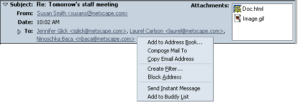
Clicking on an address link opens a menu of available options as shown above.
The Attachments text field appears in the right corner of the envelope area only if the message contains attachments. A vertical scrollbar appears as necessary. A horizontal scrollbar is not used. A titletip, which displays the full name of the attachment, is displayed on hover of each attachment.
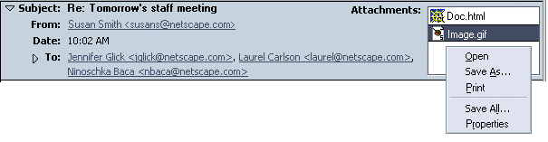
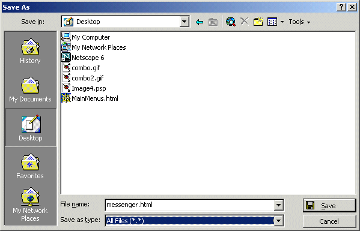
As a default, attachments are displayed inline if possible. Users
can turn this feature off by deselecting "View attachments inline"
from the "View" Menu. If users turn this feature off, attachments are
not displayed in the body of a message. Attachments are always
displayed in the Envelope area of a message. Please see the Envelope
Section above.
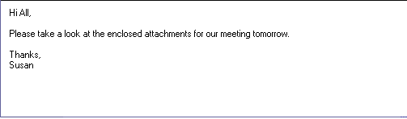
The Message Pane contains the body of the message.
Users can save a selected message as either an HTML or a TXT file. (EML is not available). Saved messages are WYSIWYG, any headers visible in the message display are saved on disk.
When a message is selected from the Main Mail Window, or opened in the Standalone Message window, the user selects "File", "Save As", "File...". The "Save Message As" dialog (system dialog) is opened. The user can select the location, name and file type (html or text) of the message.

If two or more messages are selected in the Main Mail Window, the "File", Save As" menu item is not available.
If the user saves a message with a particular file name, and then saves an additional message with the same file name, they are prompted with the "Replace the file?" dialog. (In 4.x, a message with a file name that already existed was appended to the end of the existing saved message). Of course if the name is different then both files will exist separately with different names.
In addition, a user can also save a particular message to be used as a template for future compose messages selecting, "File", "Save As", "Template".
When a user opens a mail message (by double clicking on a mail message or the context menu "Open Message"), the Standalone Message Window is displayed.
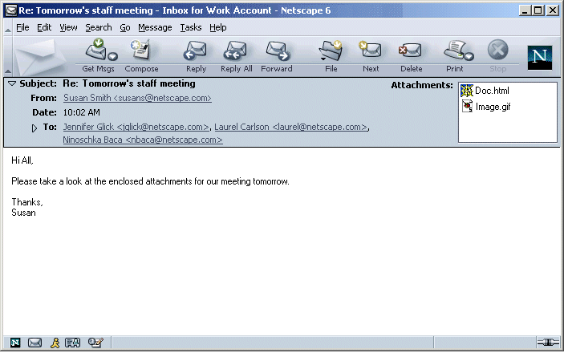
The Standalone Message window should function the same as the Main
Mail Window except where noted below.
|
Component |
Exceptions |
|
Menubar |
No "View--> Toolbars -->Location Bar" (Location Bar not implemented in 3 Pane either) |
|
Toolbars |
No Location Bar. (Location Bar not implemented in 3 Pane either) |
|
Envelope |
|
|
Body |
|
|
Statusbar |
|
|
SideBar |
No Sidebar |
|
Titlebar |
Displays name of open message |
|
"Delete" Button |
The "Delete" toolbar button deletes (moves to Trash) the message and opens the next message. |
|
Menu |
Disable |
Remove/Hide |
|
File |
Open Message |
|
|
Edit |
Undo |
Properties |
|
View |
Message |
|
|
Menubar |
No "View/Toolbars/Location Bar" |
|
Toolbars |
No Location Bar. The "Next" toolbar button is removed from the Toolbar. |
|
Envelope |
|
|
Body |
|
|
Statusbar |
|
|
Sidebar |
No Sidebar |
|
Titlebar |
Displays name of open message |
|
"Delete" Button |
The "Delete" toolbar button deletes (moves to Trash) the message and closes the standalone window. |
|
|
|
|
File Menu - Remove these items |
Open Message |
|
Edit Menu - Remove these items |
Undo |
|
View Menu - Remove these items |
Sort by ---> |
|
Go Menu - Remove entire menu |
First Unread Message |
|
|
|
Viewing a reply message should be identical to viewing an original message except that the previous message(s) are quoted within the mail message.
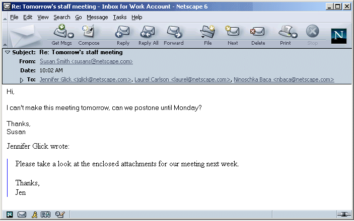
Viewing a forwarded inline message should be similar to viewing an original message message except the original message is included inline. Headers displayed are based on if the sender had Brief, Normal or All jeaders selected.
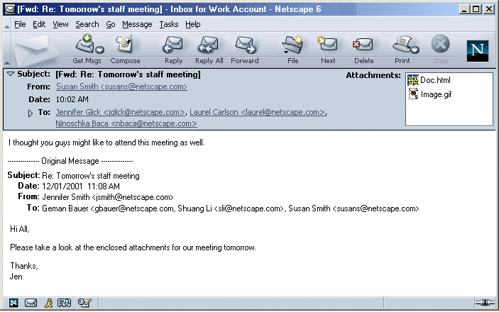
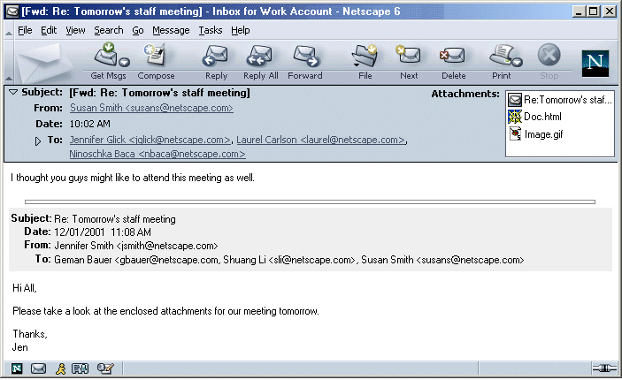
Selecting a news server in the left pane displays Account Central in the right pane.
If there are no postings available for a selected newsgroup, the following text is displayed "There are no postings available for the selected newsgroup."
When messages are in threaded mode, expandable Twisties are available at the parent level only.
No message or folder or newsgroup should be droppable on a news server or news folder. A "no drop" symbol (circle with a /) appears when an item is dragged over a newsgroup or news server.
As a default, the displayed name for newsgroups is truncated to
display the first letter (followed by a period) of the names making
up a newsgroup. The last name of the newsgroup is displayed in full.
This conserves space will providing the most useful information for
the user. For example, "netscape.public.mozilla.mail-news" would be
displayed as "n.p.m.mail-news".
Users can specify whether they would like to see the full name or
truncated name of newsgroups in their Mail Folder Pane. This
setting is per news server/host and is accessed from the Account
Settings dialogs for the specific new server. As a default, newsgroup
names are truncated.
Two radio buttons:
If time permits, an advanced hidden preference could allow
advanced users to specify how many words are truncated.
1 = n.p.m.mail-news
2 = n.p.mozilla.mail-news
3 = n.public.mozilla.mail-news
4 = netscape.public.mozilla.mail-news
Please see the Mail Menu UE spec.
Please see the Preferences spec.
|
Condition |
Message |
User Choices |
|
Attempting to delete a Mail Account. Context menu, Edit menu or Backspace or Delete key. Dragging to the Trash is not allowed. |
Are you sure you want to remove the mail account <> and all the folders in it? |
Yes & No |
|
Attempting to delete a News account. Context menu, Edit menu or Backspace or Delete key. Dragging to the Trash is not allowed. |
Are you sure you want to remove the newsgroup <name> and all the newsgroups in it? |
Yes & No |
|
Attempting to delete "Local Folders". |
This item can not be removed. |
OK |
|
If a user sends mail (using "From" drop down menu in Compose window) from an account they are not currently logged into and they have the "Save a copy of sent messages in my Sent folder on the server" preference set. |
You are not logged onto account <>. A copy of the message will be saved in your Local "Sent" folder. |
OK Cancel |
|
User attempting to delete a user created folder. |
Are you sure you want to delete folder <name> and all it's contents? |
OK Cancel |
|
User attempts to delete or unsubscribe to a newsgroup. |
Are you sure you want to unsubscribe to the newsgroup <name>? |
OK Cancel |